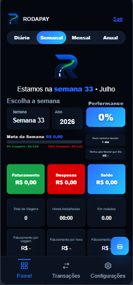
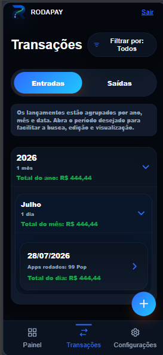

O problema
Ganhos de diferentes aplicativos, combustível, manutenção, horas e quilometragem costumam ficar espalhados ou sem registro, dificultando saber o lucro real.
CASE DE PRODUTO DIGITAL
Uma aplicação financeira criada para ajudar motoristas de aplicativo a acompanhar ganhos, despesas, metas, produtividade e tempo de trabalho em uma experiência pensada para o celular.


VISÃO DO PROJETO
Ganhos de diferentes aplicativos, combustível, manutenção, horas e quilometragem costumam ficar espalhados ou sem registro, dificultando saber o lucro real.
Reunir entradas, saídas, metas e jornada em uma ferramenta simples, permitindo que o motorista acompanhe resultados diários, semanais, mensais e anuais.
Arquitetura da interface, experiência mobile-first, lógica financeira, indicadores, autenticação, persistência individual dos dados e evolução dos fluxos.
EXPERIÊNCIA MOBILE-FIRST
Para ter a melhor experiência, abra o RodaPay pelo celular. A navegação inferior, os botões flutuantes, os cards e os gestos de arrastar foram organizados para telas menores.
DEMONSTRAÇÃO ABERTA
A conta é compartilhada e existe somente para demonstração no portfólio. Os dados podem ser alterados por visitantes ou restaurados periodicamente.
FUNCIONALIDADES
Os módulos usam os registros do motorista para mostrar não apenas quanto entrou e saiu, mas como o trabalho está rendendo.
Resumo diário, semanal, mensal e anual de receitas, custos, resultado e metas.
Registro de origem, valor, viagens, quilômetros, horas trabalhadas e observações.
Controle de combustível, alimentação, manutenção, forma de pagamento e nota fiscal.
Custo por quilômetro, lucro por viagem, lucro por hora e lucro por quilômetro.
Planejamento semanal, mensal e anual com faturamento, lucro e despesas estimadas.
Cronômetro para iniciar, pausar, retomar e encerrar o período de trabalho.
Geração de relatórios por período, preparados para impressão ou exportação em PDF.
Origens de receita, formas de pagamento e categorias de gastos personalizáveis.
Autenticação e dados isolados por usuário com Firebase Authentication e Firestore.
INTERFACE MOBILE
Clique em uma imagem para ampliar. As telas representam os fluxos e os módulos disponíveis na aplicação.
EXPERIMENTE PELO CELULAR